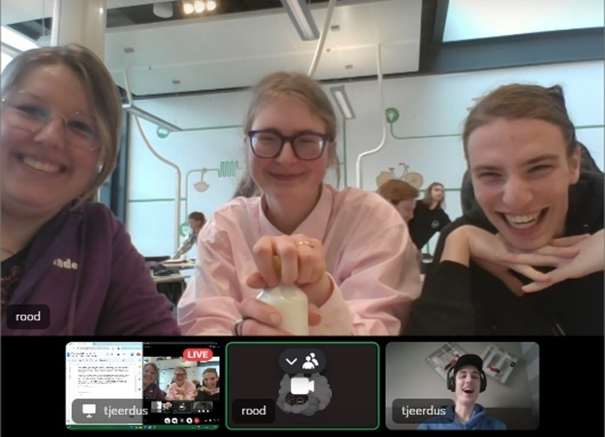
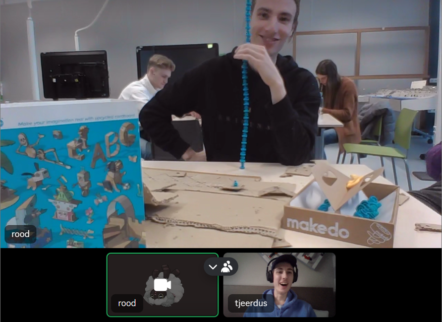
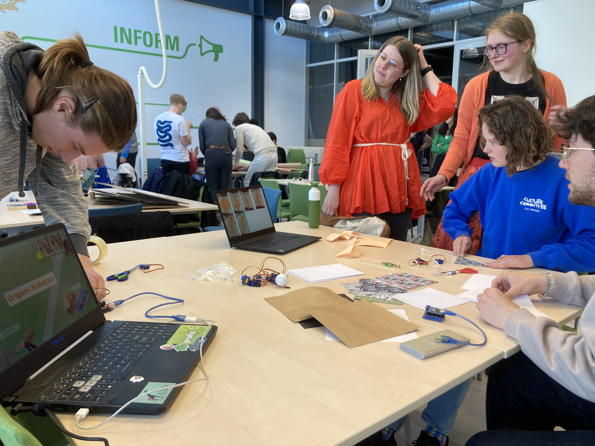

This page will showcase all the things we did in our group!
During week 2, I was sadly not in Enschede. However, thanks to the power vested in us through Discord, I was able to follow some parts of the lecture. And since I was not able to perform the hands-on activities, I was allowed to take notes and document what we were doing.

The cardboard robot workshop
We got some cardboard, three servos and a load of those plush metal wires. Of course, as all reasonable people would argue, the first thing that came to mind was to make a raccoon.
The idea was simple: make a standing raccoon that could turn its feet. The raccoon existed of a simple cardboard body on a baseplate, with the arms/feet being separate flat cardboard parts. The servos would be connected to the feet and a baseplate, and thus the raccoon could move its feet.
While Door was bravely cutting cardboard with a (rather small) pair of scissors, Suzanne got busy with making the feet. Holes were punctured into the arms for the servos and were therefore the axes of rotation. Linde was busy with making a beautiful and colourful tail for our raccoon friend.
Split pens were used to stick the servos to the cardboard baseplate, and some fun features were drawn on the cardboard with a sharpie. Door managed to weaponize herself with a glue gun and got to work with sticking all cardboard pieces together, creating the body.
The final result was, as one might have guessed, absolutely gorgeous. Our raccoon was so happy, waving its little cardboard feet to anyone passing by.
Then, Door brutally decapitated him...
BYOR
We were given a box of BYOR, after which we could do with it whatever we want…
No objective.
No task.
No instructions.
…
Now this is tinkering
Suzanne started with taking out all the stuff and reviewing and take stock of what we had. Door was staring at the instructions and all the parts. We were all quite enthusiastic about the stuff, but a bit confused about what we were supposed to do. But we can absolutely entertain ourselves with it and just mess around.
Door and Suzanne used their magical tech-wizard skills and quickly managed to control a moving thing with a turning thing. Yes, that is the clearest way it could be described.
Then, Linde has discovered the microphone and Suzanne took out the speaker. The two were combined, and now we had a speaker that made a sound like it was screaming, dying and begging for their life.
After a while, all the parts were taken out of the box. And of course, we wanted there to be chaos. So, we decided to make an installation using all of the parts. Thus, we made the following:
We got a turning button. This was connected to a light and influenced it with different levels of brightness. This brightness was recorded using a light sensor, of which the output controlled the buzzer. The sound coming from the buzzer was recorded by a microphone, and the value of its measured loudness controlled the servomotor. A distance-sensor was placed above the servomotor, so the blade of the servomotor was either right in front of the distance sensor or out of its sensor field. This created a sort of Boolean value, which then turned on the stepper motor.
It was one big chain reaction that should never have been created. But that is what CreaTe and I-Tech students are good at.
Arduino Grove Sensor Kit
We opened the box, and it showed a sort of platform with ports for all sorts of cables.
It looked very nice, if you know about cables. Or whatever this thing was supposed to be.
We were all wondering what to do with it. Door plugged in some cables into her laptop. Tjeerd was fed the delicious data on his screen that he couldn’t make out.
It was very overwhelming; this was even supposed to be an introductory kit for kids. The term “What if we…” was passed around quite a lot. Door was confused. Suzanne was overwhelmed. Linde was both overwhelmed as confused. And Tjeerd was distracted by a bird outside.
A light sensor was taken out and connected to the Arduino and laptop.
We assumed there to be a manual in there. Apparently, there was a QR code with instructions.
Suddenly, there was light!
When you held, turned and released a button a certain degrees, a light started and stopped flickering. We never figured out the kit. Learning Arduino the normal way is easier than using this kit developed and meant to make it easier to learn Arduino.
Makedo
We were very hyped when we realised we got to work with cardboard.
The kit was basically a How to Creative with Cardboard. We got all sorts of tools that made it easier to work with cardboard, such as a mini saw/knife, screwdriver and screws. Suzanne quickly made a flower with a screwdriver. The kit looked fun: cardboard is already quite easy to work with, but this made it even easier. It’s like how you got tools for woodworking, but then for just cardboard.
But while fun, the kit did feel kind of useless. Suzanne said she prefers split pens over the screws. You can’t rotate the carboard parts attached with a screw anymore, since it then just detaches. It is good if you want to make something permanent or for playing. It is good for kids, they’ll have a fun time. But it is not great for tinkering.
Cardboard is already great for prototyping, and it doesn’t really serve a purpose for that.
Suzanne figured out a way to have the screws be constantly rotating. She cut a slit in the cardboard, so it could not detach when turning. So, she managed to overcome an issue this kit brings. Somewhere at the end, we discovered what we called “the murder hole”. This was a pin that can be used to puncture a hole in the cardboard so that it was easier to insert the screws.
Suzanne made a tower of screws. It was clear that this kit was not that great, and we got bored of it quite quickly. We would have liked a pair of scissors, some tape or split pens more than this.

For the first brainstorming session, we were tasked with coming up with 3 ideas and pitch them the next week. The tinkering session had to be aimed at I-Tech students. Door, being the only I-Tech student among us, was thus the “reference point” for our audience.
We thought of what topics we were all interested in and wanted to learn more about. Door introduced the topic of Foley and sound design, since she was currently following a course on that topic. Me, being interested in film, music and sound design (as well as having been a TA for Sound Engineering) was also very interested in that topic. Suzanne introduced the topic of soft robotics, and mentioned a satellite which was able to fold its solar panels, like origami. This inspired us to dive into the topic of origami-based soft robotics. Both Suzanne and me being big fans of 3D printing thought of a workshop about 3D printing, especially about the concept of working with layers. These ideas were worked out into a short pitch. The group told me to go wild with animations and transitions and told me I could do what I want for the pitch, as long as it got the point across.
The week thereafter, we pitched our three ideas.
Of these three ideas, we decided to continue with the workshop about origami-based robotics. The reason was since it was the topic with the most possibility for exploration. With the other topics, we would be limiting the participants too much and not leave enough space for tinkering. We also decided to not use balloons and pumps, since movement caused by these materials would take away the originality of origami. You would simply be moving paper with balloons, instead of having movement caused by origami structures.
We had thought of the workshop in two parts: in the first part we would introduce the participants to origami robotics and show them the basic origami techniques for movement, and in the second part we would give them the materials and let them try to make their own origami robot. The goal we would give them was to move a ball with help of origami.
Since we abandoned the idea of using balloons and air pumps, we needed another movement-enabler for the origami. Suzanne came up with the idea of using pre-programmed servo’s, which sounded like a nice idea. Combined with string, we thought that would be a good idea.
Then we had to actually come up with the origami building blocks that we were going to teach to the participants. We wanted a few building blocks that could be used to make a moving robot, but would also allow people to experiment with the principles of movement using origami.
This was quite a difficult part, and took one full morning and afternoon to make. Eventually we came up with a butterfly, a crane and a walker. These sessions were quite fun, since we just tinkered a bit with origami ourselves. Eventually, I came up with a pretty simple walker, which Suzanne managed to get moving with servo’s and Door drew some eyes on it.
We created some instructions, asked people to be our participants, booked a room in the DesignLab and the workshop could begin!
For the user testing, we managed to get four people enthusiastic to the workshop. We started with giving them a quick presentation on what the goal would be, and showed them some origami principles and patterns. We allowed them to follow the pattern of the pecking bird and showed them how this origami structure can be moved. During the worshop, we let the instructions of our origami structures and patterns show on the screen, and mentioned that they were allowed to both look at our patterns as look up other patterns online.
We decided not to show our own solution/walking robot, since we did not want to influence them to make the same: we wanted them to come up with their own ideas and tinker. Providing them with paper, cardboard, split pens, servo’s, scissors, thread and glue, we let them go wild.
The idea that the users came up with was quite surprising. They looked up a pattern of a frog online, and all decided to make one. Now, having four frogs and after a bit of play, they thought that they could use a servo to let a frog jump on the ball to move it. And they succeeded!
The feedback we received was that the participants were a bit confused about what they were allowed to do. We realised this issue and thought it would be clever to implement a bit of rules at the beginning.
Eventually, it was time to set up the demo of our workshop. While I did have to miss half of this session due to presentations for another course happening at the same time, we decided to have a trimmed version of our workshop. Instead of having to move a ball, the goal was to have a pecking bird pattern move as a result of the servo. Suzanne managed to connect a servo to a potentiometer, so that the servo followed its rotation. On a laptop, we showed the instructions for the pecking bird, and people were able to fold one themselves. When they had done so, they could try to add a servo so that the origami structure was moving because of the servo. People seemed to like being able to hold and inspect the example pecking bird and making it move with their hands.
All in all, while the user testing resulted in a different outcome than we had expected, we did manage to create a fun and engaging workshop and tinkering experience.
